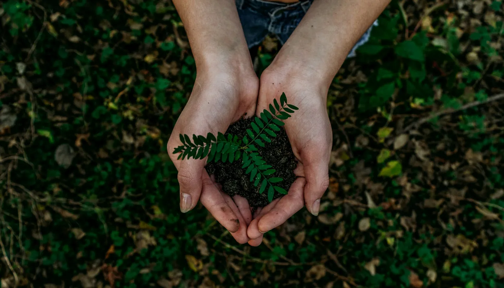

01 Our story
From small steps to big impact
Eco Creational began in Sri Lanka with a handful of sewing machines and a deep concern for the plastic crisis. What started as a local initiative to replace single‑use bags has grown into a trusted partner for universities, resorts, and global brands.
We believe sustainability should never be a compromise. That's why we blend timeless design with eco friendly materials non woven, canvas, jute, and calico cotton all crafted ethically. Every bag we produce carries a promise: to reduce waste, support conscious living, and empower communities.
5,000+Bags created
30+Partners
100%Plastic‑free
